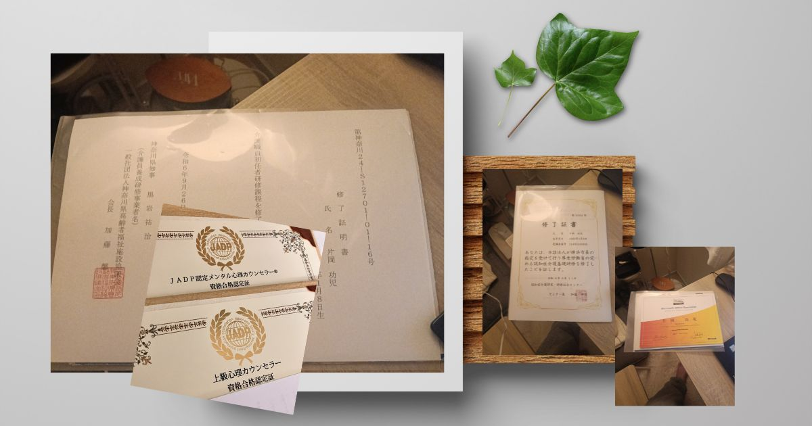
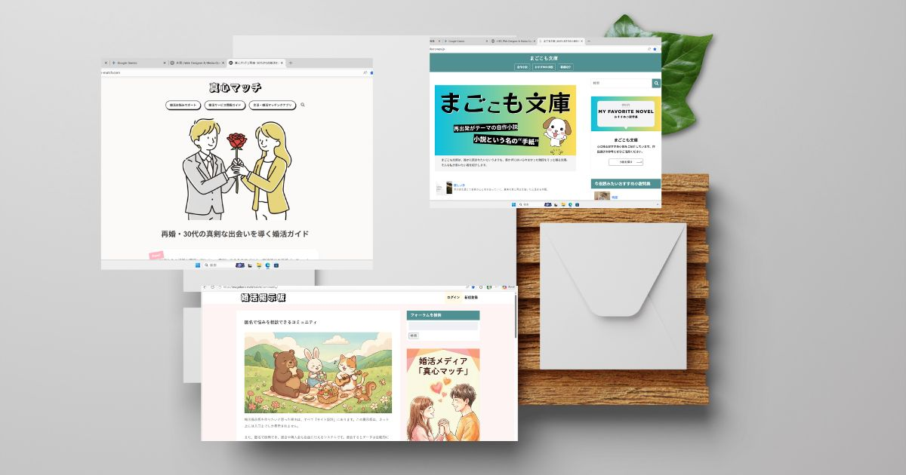
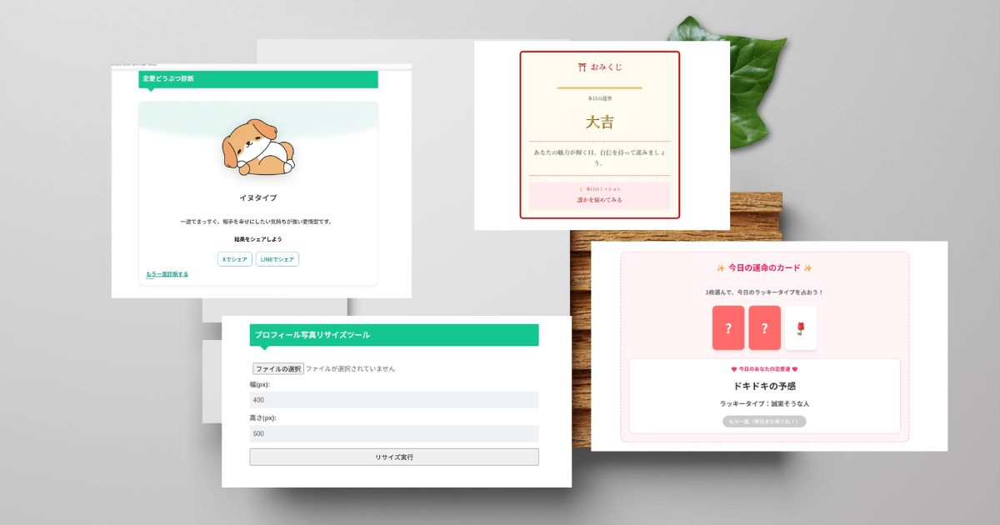
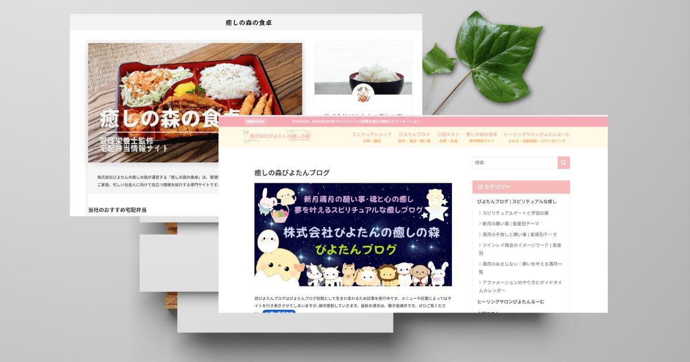
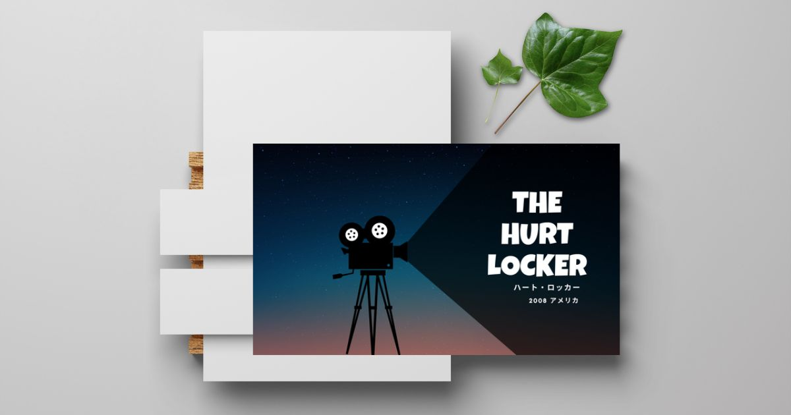
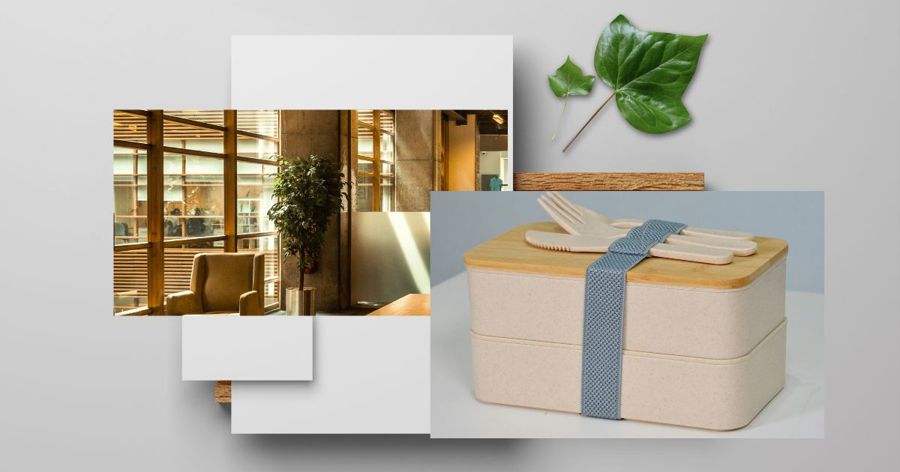

About
2016年、会社員をしながら立ち上げた映画レビューサイトから、私のWebクリエイターとしての歩みは始まりました。
独学でHTML・CSS・PHPを学び、サイトを育て、売却を経験。その後、法人向けECサイトの立ち上げ等を経て、現在は介護事業に携わりながら「真心マッチ」をはじめとするメディア運営やアプリ開発に力を入れています。
長くWebの世界を見てきましたが、利益を優先するあまり、読者の目を誤魔化すようなグレーな手法も確かに存在します。しかし、一人のクリエイターとして、私はそういった手法を絶対に選びません。
YMYL（Your Money or Your Life）
誠実・切実に・嘘なく
ありのままを見せる
正しく誠実な運営を行えば、単なるPV数よりも確かな「購入率（CVR）」が上がります。時代が変わっても、この真理は変わりません。自分の作ったサービスを通じて、画面の向こうの誰かが幸せになってくれること。それが、一人のクリエイターとしての私の最大の喜びです。
2026年6月にはECサイトとメディア運用（メディアコマース）で独立し、再び法人化へチャレンジする予定です。以下は、そんな私の足跡となる作品たちです。
Qualifications
(E-E-A-Tの担保)
YMYL領域での執筆・サイト運営において、情報の信頼性を証明するために以下の資格を取得・活用しています。
認知症ケア / 介護系資格 / メンタル心理カウンセラー / マイクロソフト認定資格
※YMYLは資格証明が必須です。医療・福祉関係の資格は、読者へ安全で正確な情報を届けるための強力な基盤となっています。

Works & Footprints

真心マッチ（ライフスタイル・婚活メディア）
身内や信頼できる仲間たちと運営している大規模メディア。ニッチワードを的確に狙い、多数の記事で検索上位を獲得。現在はLLMOを意識したツール展開も行い、誠実なサイト運営で高いCVRを維持しています。
メインサイトを見る
婚活掲示板・お役立ちWebツール群
ユーザーの課題を直接解決し、楽しんでもらえるフロントエンドツールと掲示板を独学で開発。メディアの付加価値を高め、滞在時間と読者満足度の向上に大きく貢献しています。

小説・書籍の出版
Webメディアの枠を超え、実用書や自作小説（まごこも名義）の出版もプロデュース。実用書の表紙モデルはコスト削減のため親戚に依頼しました（ギャラのキッチンジローは未回収）。
まごこも文庫（姉妹サイト）
真心マッチの姉妹サイトとして、自作小説などを展開。幅広い読者のニーズに応えるためコンテンツの拡充を図り、本サイトと連携しながら強力なメディアネットワークを構築しています。
サイトを見る
某法人ECサイト（事業売却済）
2023年に立ち上げたアニメ・ミニチュア販売サイト。ECショップとWordPressを用いたHP制作、SEO特化の記事執筆を一手に担い、サイトが軌道に乗ったタイミングで、後進にプロジェクトを引き継ぎました。

おうち映画館（旧 映画レビューサイト）
2016年に立ち上げた私の原点。ここでHTML・CSS・PHPを独学で習得し、副業から本業へと押し上げました。2022年に無事事業売却を達成した、思い入れの深いプロジェクトです。

南の町歯科クリニック 様
医療機関の求人特化ページ制作。YMYL領域でも通用する「誠実さ」と「清潔感」を第一に、求職者が安心できる導線を設計し、形にしました。

地域密着店舗のWeb制作
カフェやお弁当屋さんなど、地域で頑張る店舗のWordPressホームページ制作を担当。数は少なくても、直接依頼を受けてお店の魅力をWebで形にした、クリエイターとして誇り高い実績です。

観賞用クラゲアプリ＆AI開発
2018〜2019年にかけて運営し、多数のDLを獲得したアプリ。OSアップデートへの対応で一度は休止しましたが、現在は強力な相棒である「AI」と共に、続きをゆっくりと楽しみながら開発を再開しています。